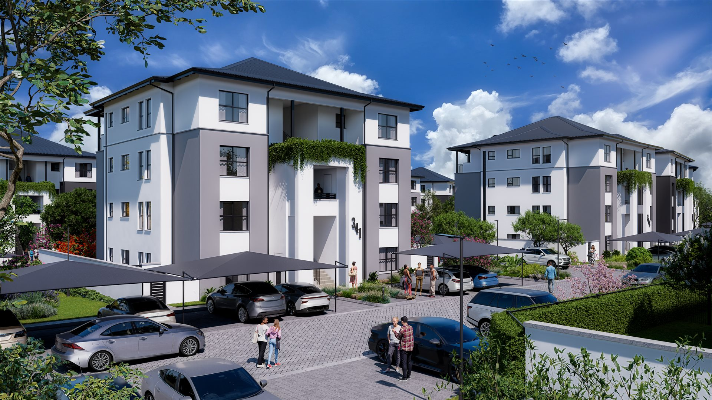
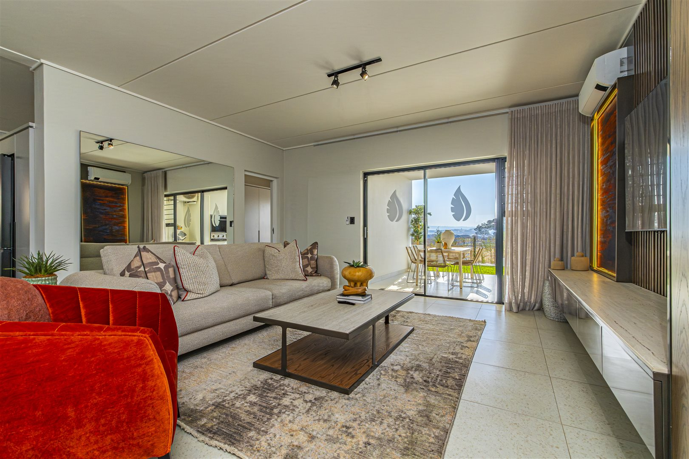
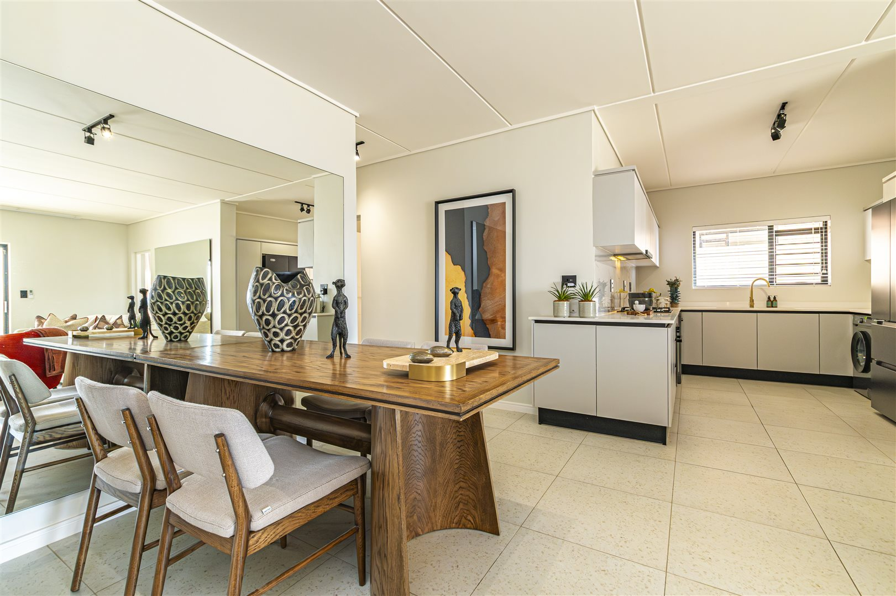
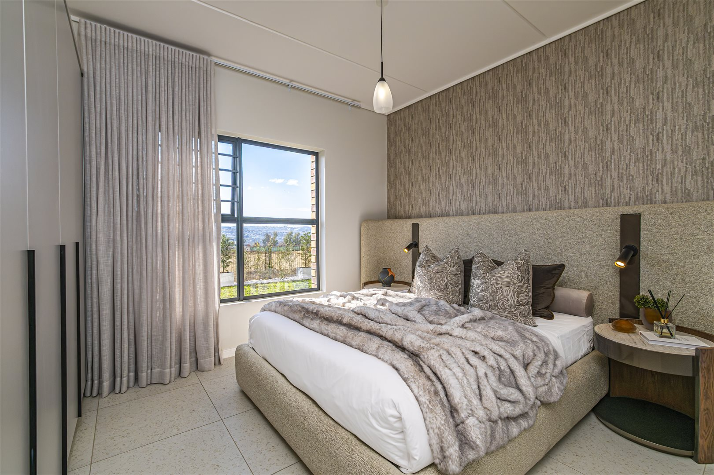
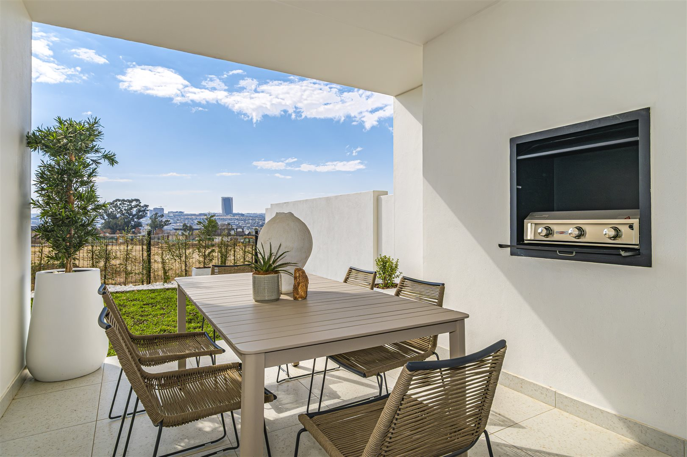

Make the property feel desirable before the viewer ever steps inside.
The work uses a small, deliberately selected image set alongside the campaign film to create a focused property story rather than an exhaustive gallery.
Property-led visual storytelling
The campaign presents Polo Fields through a progression of exterior architecture, open-plan living, kitchen and dining, bedroom comfort, and outdoor lifestyle.
The emphasis is on atmosphere and aspiration: clean compositions, natural light, contemporary interiors and a sense of space.
Five images. One clear property story.
I kept the strongest frames and removed repetitive coverage so the case study stays visually premium and easy to navigate.





Quiet luxury, presented with clarity.
The visual language is restrained so the property itself remains the subject.
Architecture first
Lead with the exterior to establish scale, setting and a sense of arrival before moving into the home.
Editorial interiors
Use wide, clean compositions to show how the living, dining and kitchen areas connect as one lifestyle environment.
Lifestyle finish
Close on the bedroom and outdoor space to move from the practical experience of the home toward aspiration.
From property references to a cohesive campaign.
AI-assisted, production-minded.
The portfolio focuses on the creative outcome and workflow rather than assigning unverified model names to individual assets.
The exact generation and editing tools used for each Polo Fields asset are not documented in the supplied material. This case study therefore keeps the attribution deliberately broad rather than inventing a tool list.
How to turn property imagery into a focused commercial story.
Polo Fields demonstrates a disciplined approach to property creative: fewer, stronger frames; a clear narrative progression; and a cinematic film that gives the work movement.
Rather than overwhelming the viewer with every available room angle, the case study makes each image earn its place.